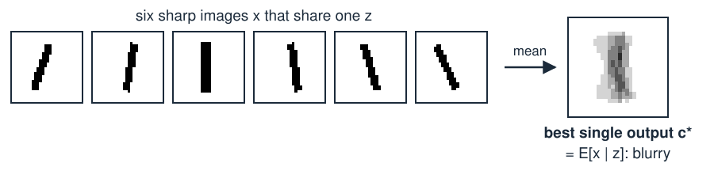
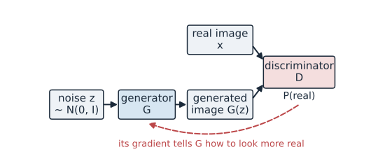
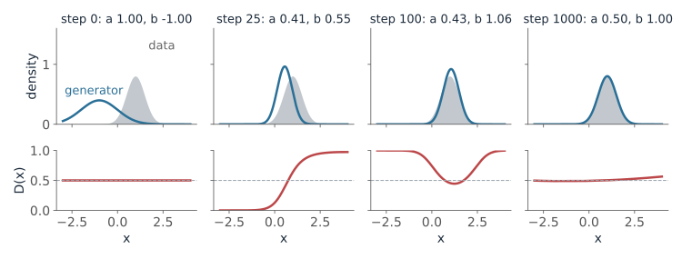
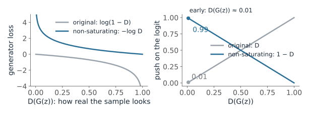
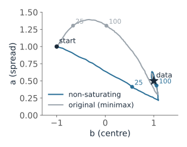

Generative adversarial networks
About this lecture
How can a network learn to make images that look real, when nobody can write down what “looking real” means?
- A generator turns random numbers into images; a discriminator tries to tell them from real ones. The two are trained against each other.
- The smallest GAN: a line against a quadratic, in one dimension, trained live.
- The best discriminator and what the game converges to: generated data distributed like the real data.
- The non-saturating loss: why the textbook objective barely moves at the start.
Slides titled The math give the formulas and proofs; the ideas are complete without them.
Recall: the VAE generates, but blurrily
The VAE draws a code z \sim \mathcal N(0, I) and decodes it.
- Trained to rebuild each training image (squared error), its decoder outputs the average of all images that fit a code: sharp strokes become a blurry fan (right).
- What we want instead: a map from random numbers to images whose outputs look like real images, each one sharp.
- But “looks real” has no formula. Idea (Goodfellow et al., 2014): learn the judge too.

The game

- Discriminator D: a classifier, real (1) or generated (0), trained with cross-entropy as on the backprop day.
- Generator G: never sees a real image. It only gets the gradient of D’s verdict: “change your output this way to look more real”.
- Like a forger and an inspector who both improve. The game ends when D can do no better than guessing.
A GAN in one dimension
To watch the game, shrink it:
- Data: numbers from \mathcal N(1, 0.5^2) (grey).
- Generator: a line, x = a\,z + b with z \sim \mathcal N(0, 1): its samples are \mathcal N(b, a^2) (blue). Start: a = 1, b = -1.
- Discriminator: D(x) = \sigma(c_0 + c_1x + c_2x^2) (red), a logistic curve of a quadratic.
- Five discriminator steps, then one generator step; repeat.

- D says “real” where data outnumber generated samples. The generator moves its samples up the slope of D.
Try it: the game in one dimension
The best discriminator
For a fixed generator, which D is best? At each x, D sees real points with density p(x) and generated ones with density q(x). The best guess is the share of real ones:
D^*(x) = \frac{p(x)}{p(x) + q(x)}
- p = 0.4, q = 0.1: D^* = 0.8. Where only real data lie: 1. Only generated: 0.
- When the generator is perfect, q = p and D^* = \tfrac12 everywhere: nothing left to learn from.
- Our quadratic D can express D^* exactly here: the log of a ratio of two Gaussians is a quadratic.

The math: the objective and the best discriminator
The two players share one value function (Goodfellow et al., 2014):
V(G, D) = \mathbb E_{x\sim p}\big[\log D(x)\big] + \mathbb E_{z}\big[\log\big(1 - D(G(z))\big)\big], \qquad \min_G\max_D V.
- D maximises V: that is minimising its cross-entropy on real (label 1) and generated (label 0) samples.
- Write the second term over x with the generator’s density q: V = \int p\log D + q\log(1 - D)\,dx. For each x, a\log y + b\log(1 - y) is largest at y = a/(a + b), so D^*(x) = \frac{p(x)}{p(x) + q(x)}.
The math: what the generator minimises
Insert D^* into V:
V(G, D^*) = \int p\log\frac{p}{p + q} + q\log\frac{q}{p + q}\,dx = -\log 4 + 2\,\mathrm{JS}(p\,\|\,q),
with the Jensen–Shannon divergence \mathrm{JS}(p\,\|\,q) = \tfrac12\mathrm{KL}(p\,\|\,m) + \tfrac12\mathrm{KL}(q\,\|\,m), m = \tfrac12(p + q).
- \mathrm{JS} \ge 0, and = 0 only for q = p: with a perfect discriminator, the generator’s best move is to match the data distribution.
- At the optimum V = -\log 4, i.e. the discriminator’s loss is 2\ln 2 = 1.386 (the demo’s dashed line).
- In practice D is never optimal and both are trained by alternating gradient steps: the theory says where the game can end, not that it gets there (next unit).
The original loss stalls at the start
Early on, D easily spots the fakes: D(G(z)) \approx 0.01.
- The original generator loss \log(1 - D) is flat there (left, grey): the push on the generator is D = 0.01.
- Non-saturating loss: minimise -\log D(G(z)) instead (“make D say real”). Same goal, but the push is 1 - D = 0.99: 99 times stronger exactly when the generator is bad.
- Everyone uses the non-saturating version.

The math: the generator’s gradient
Let s(x) = c_0 + c_1x + c_2x^2 be the discriminator’s logit, D = \sigma(s), and x = az + b. Per sample:
\frac{\partial}{\partial s}\big[-\log\sigma(s)\big] = -(1 - D), \qquad \frac{\partial}{\partial s}\big[\log(1 - \sigma(s))\big] = -D,
\frac{\partial \ell}{\partial b} = \frac{\partial \ell}{\partial s}\,s'(x), \qquad \frac{\partial \ell}{\partial a} = \frac{\partial \ell}{\partial s}\,s'(x)\,z, \qquad s'(x) = c_1 + 2c_2x.
- The generator’s gradient goes through the discriminator: backpropagation with D’s weights held fixed.
- Both losses push in the same direction (-s'(x)); they differ only in the factor, 1 - D or D.
- For a network generator, \partial x/\partial(\text{weights}) comes from backpropagation through G; nothing else changes.
Two routes to the same end
The path of the generator’s (b, a) in the demo, from the start (-1, 1) to the data’s (1, 0.5):
- Non-saturating (blue): moves right at once; overshoots to a too narrow generator (a = 0.22 at step 50), then widens.
- Original (grey): first widens (a up to 1.38) while barely moving; b is 0.02 after 100 steps (non-saturating: 1.06).
- Both end at a = 0.50, b = 1.00.

GAN training as pseudocode
repeat:
for k steps: # the discriminator
real = a batch of training images
fake = G(z) for a batch of noise z
loss_D = mean(−log D(real)) + mean(−log(1 − D(fake)))
step D's weights down the gradient of loss_D
fake = G(z) for a fresh batch of noise z # the generator
loss_G = mean(−log D(fake)) # non-saturating
step G's weights down the gradient of loss_G # backprop through D, then G- Two networks, two optimisers, one alternating loop. Only G is kept at the end.
GANs for images
- G: a convolutional network that upsamples a noise vector (say 128 numbers) into an image; D: a convolutional classifier (convolutional networks).
- Within a few years (2014–2019) GANs went from blurry 32 × 32 digits to photographic faces at 1024 × 1024 that people cannot tell from photos.
- Strengths: sharp images, one forward pass per sample (fast).
- Weaknesses: no likelihood (you cannot ask “how probable is this image?”), no encoder, and training is fragile (next unit).
- In microscopy they are mostly used as translators from one kind of image to another (image-to-image translation), with the risks that come with it.
VAE and GAN side by side
| VAE | GAN | |
|---|---|---|
| Trained by | rebuilding training images (+ a prior term) | a game against a discriminator |
| Samples | blurry: the average of what fits a code | sharp: “looks real” is learned |
| Encoder (image → code) | yes | no |
| Likelihood | a lower bound (ELBO) | none |
| Training | stable, one loss going down | two losses, no single number that must go down |
| Failure | blur | missing variety, oscillation (next unit) |
Summary
| Idea | In one line |
|---|---|
| The game | G makes samples, D tells real from fake, each trained against the other |
| Best discriminator | D^* = p/(p + q); \tfrac12 everywhere when the generator matches the data |
| What G minimises | with the best D: the Jensen–Shannon divergence between data and samples |
| Non-saturating loss | -\log D(G(z)): a strong push exactly when the generator is bad |
| Generator gradient | backpropagation through D into G |
| Trade-off | sharp and fast samples; no likelihood, fragile training |
Next: what goes wrong in training, and how to see it.